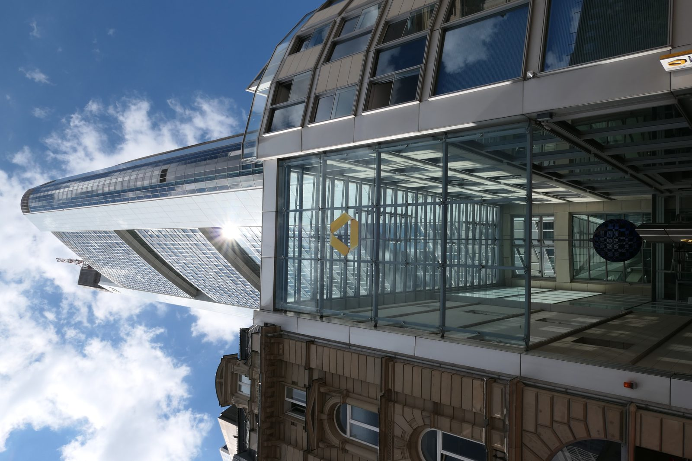
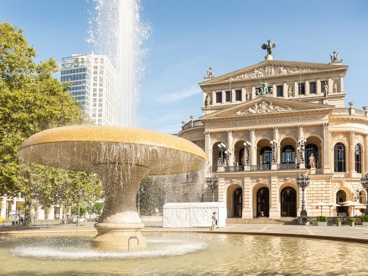
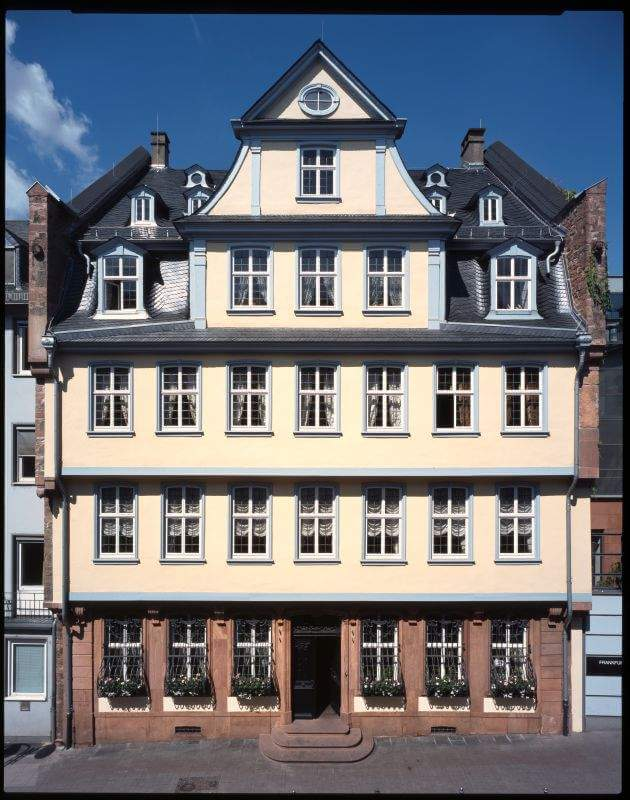
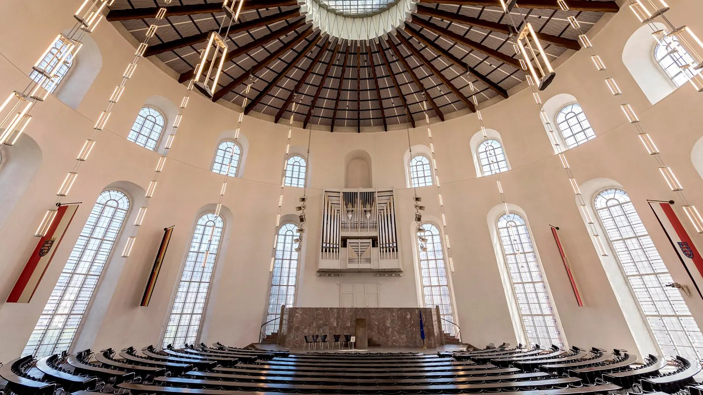
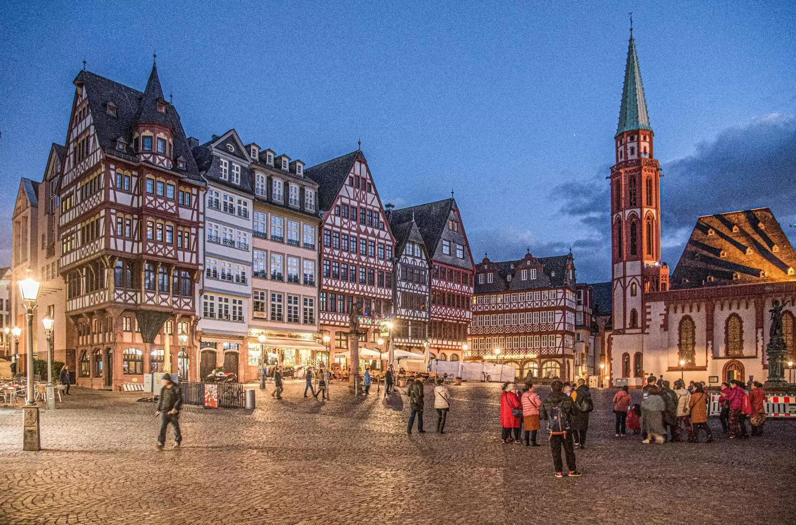
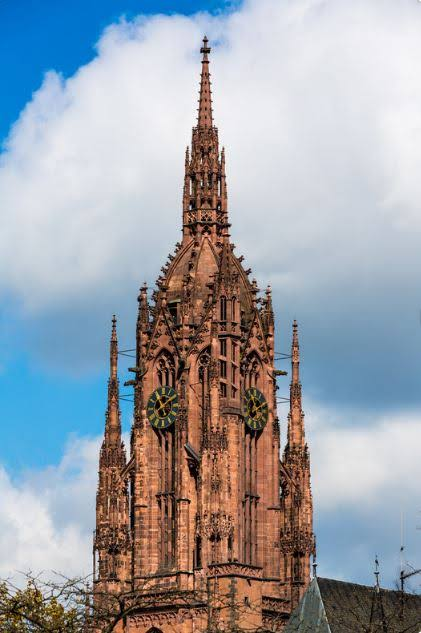
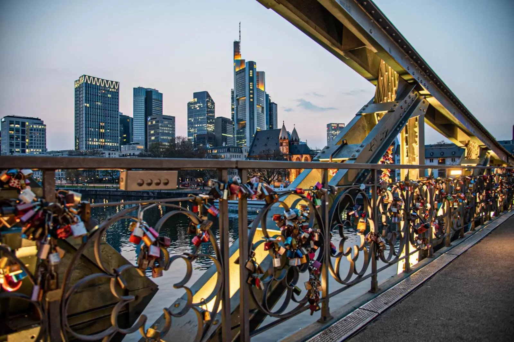

erwartet: images/01-commerzbank-tower.jpg
Frankfurt
Vom Bankenviertel in die Altstadt, zu Fuß. Wir starten dort, wo die Stadt am lautesten mit ihrem Geld prahlt, und enden dort, wo sie am schönsten ist – am Main, mit der ganzen Skyline im Blick.
Start, Ziel, Tempo
Kurz zur Route, bevor's losgeht: Die längste Etappe ist keine 900 Meter, alles gut zu Fuß machbar. U- und S-Bahn braucht ihr nirgends – aber falls die Füße doch mal murren oder es anfängt zu schütten, liegt an fast jeder Station eine Haltestelle in Sichtweite (steht jeweils bei "Praktisch"). Am schnellsten wäre die U6/U7 direkt von der Alten Oper zum Dom/Römer, falls ihr mittendrin abkürzen wollt.
Auf dieser Seite: Commerzbank Tower · Alte Oper · Goethe-Haus · Paulskirche · Römerberg & Römer · Kaiserdom · Eiserner Steg
1. Commerzbank Tower
Wir fangen ganz oben an – zumindest optisch. 300 Meter Stahl und Glas, seit 1997 das erste Gesicht, das Frankfurt am Horizont zeigt. Kein zufälliger Startpunkt: Hier steckt das ganze Selbstverständnis dieser Stadt drin, bevor wir gleich in die Gassen eintauchen, wo es viel älter wird.
Norman Foster hat den Turm zwischen 1994 und 1997 gebaut – als erstes deutsches Hochhaus komplett aus Stahl, mit einem dreieckigen Grundriss um ein zentrales Atrium herum, das sich alle vier Stockwerke zu kleinen "Sky Gardens" öffnet. Klingt nach Architektursprache, heißt aber einfach: Licht und Luft statt nur Klimaanlage. Für 1997 ziemlich radikal. Bis 2021 war er 24 Jahre lang das höchste Gebäude der EU, dann hat ihn der Varso Tower in Warschau abgelöst.
Warum genau das hier: Weil man Frankfurts Selbstbild – Geld, Größe, Tempo – nirgends klarer sieht als an diesem Turm. Alles, was danach kommt, ist der Gegenentwurf dazu.
Praktisch: Frei zugänglich von außen, kein regulärer Innenbesuch möglich, keine Aussichtsplattform (anders als der Maintower). Nächste Haltestelle: Taunusanlage (U1/U2/U3/U8/U9), 3 Gehminuten.
Nicht verpassen: Der Blick durch die Glasfassade der Lobby ins begrünte Atrium – mehr Innenleben bekommt man als Besucher nicht zu sehen.
Fototipp: Vom Kaiserplatz schräg nach oben fotografieren, oder ein paar Schritte in die Taunusanlage hinein mit Bäumen im Vordergrund – bricht die reine Beton-Optik auf.
Wusstest du schon? Anders als der Maintower hat der Commerzbank Tower keine öffentliche Aussichtsplattform – reines Bürogebäude, Publikumsverkehr nur bei seltenen Architekturführungen.
2. Alte Oper
Von Beton und Stahl direkt in den Prunk des 19. Jahrhunderts: Die Alte Oper ist ein Renaissance-Palast, der eigentlich zweimal gerettet werden musste – einmal vor den Bomben, einmal vor der eigenen Stadt.

Richard Lucae baute sie 1873 bis 1880, eröffnet wurde sie mit Kaiser Wilhelm I. persönlich im Publikum. 1944 brannte sie bei einem Luftangriff komplett aus – übrig blieb nur die Fassade. In den 1960ern wollte die Stadt sie abreißen, der zuständige Wirtschaftsdezernent Rudi Arndt bekam dafür den Spitznamen "Dynamit-Rudi". Eine Bürgerinitiative sammelte stattdessen 15 Millionen Mark für den Wiederaufbau, und 1981 öffnete das Haus wieder – mit Mahlers 8. Sinfonie, passend monumental.
Warum genau das hier: Weil hier zum ersten Mal auf dieser Tour sichtbar wird, wie sehr sich Frankfurt seine Geschichte zurückerkämpft hat – ein Muster, das sich später am Römer wiederholt.
Praktisch: Von außen jederzeit zugänglich, innen nur bei Konzert oder Führung zu sehen. Eigene Haltestelle "Alte Oper" (U6/U7) direkt am Platz.
Nicht verpassen: Die Inschrift "Dem Wahren, Schönen, Guten" über dem Portal – Kaiser Wilhelm soll das Haus damals selbst als "für seine Verhältnisse zu prunkvoll" kommentiert haben.
Fototipp: Von der gegenüberliegenden Seite des Opernplatzes mit dem Brunnen im Vordergrund – klassisch, aber aus gutem Grund.
Wusstest du schon? Der Mann, der sie sprengen wollte, war am Ende auch der, der ihre Rettung mit einfädelte – Rudi Arndt drehte seine Position im Lauf der Debatte komplett um.
3. Goethe-Haus
Kein Palast, sondern ein ganz normales – für Frankfurter Verhältnisse großzügiges – Bürgerhaus. Genau das macht es besonders: Hier wurde Johann Wolfgang von Goethe 1749 geboren und wuchs auf, bis er mit 16 zum Studium nach Leipzig ging.

Auch dieses Haus fiel 1944 fast vollständig den Bomben zum Opfer. Was heute steht, ist eine Rekonstruktion nach alten Plänen, Fotografien und geretteten Originalteilen – von der astronomischen Uhr bis zu einzelnen Möbelstücken. Nebenan schließt sich das Deutsche Romantik-Museum an, barrierefrei zugänglich, während man ins historische Haus selbst nur über Treppen kommt.
Warum genau das hier: Weil man selten so nah an das bürgerliche Frankfurt des 18. Jahrhunderts herankommt – kein Museum mit Abstand, sondern ein Zuhause mit Geschichte.
Praktisch: Mo–So 10–18 Uhr, Do bis 21 Uhr. Eintritt 12 € (ermäßigt 7 €, Familienticket 18 €). Nächste Haltestelle: Hauptwache (fast alle U- und S-Bahnen), 4 Gehminuten.
Nicht verpassen: Bei einem Innenbesuch: die original eingerichteten Dichterzimmer im ersten Stock, in denen Goethe seine ersten Werke schrieb.
Fototipp: Die schlichte Fassade frontal, am besten am frühen Vormittag, wenn noch keine Reisegruppen davorstehen.
Wusstest du schon? 1944 lag das Haus fast komplett in Trümmern – fast alles, was du heute siehst, ist Wiederaufbau nach alten Unterlagen, kein Original im strengen Sinn.
4. Paulskirche
Ein schlichter, runder Kirchenbau – und trotzdem einer der bedeutendsten Orte der deutschen Geschichte. Hier tagte ab dem 18. Mai 1848 die erste frei gewählte deutsche Nationalversammlung.

Gebaut wurde die Kirche zwischen 1789 und 1833 von Johann Friedrich Christian Hess, klassizistisch, aus rotem Mainsandstein. 1849 verabschiedete die Nationalversammlung hier die sogenannte Paulskirchenverfassung – ein früher, gescheiterter, aber wegweisender Versuch demokratischer Grundrechte in Deutschland. 1944 brannte auch sie aus, wurde aber als erstes historisches Gebäude Frankfurts schon 1947/48 wiederaufgebaut, pünktlich zum 100. Jahrestag der Nationalversammlung.
Warum genau das hier: Weil hier zum ersten Mal auf deutschem Boden ernsthaft über Demokratie und Grundrechte verhandelt wurde – ein Jahrhundert bevor es sie tatsächlich gab.
Praktisch: Stand August 2026 grundsätzlich zugänglich, eine größere Sanierung ist angekündigt und startet in den kommenden Jahren – am Tag selbst kurz auf frankfurt.de/paulskirche checken, falls sie ausnahmsweise geschlossen ist. Nächste Haltestelle: Dom/Römer (U4/U5), 3 Gehminuten.
Nicht verpassen: Die Gedenktafeln im Innenraum und das große Rundfenster über dem Saal.
Fototipp: Schräg von vorne auf den Rundbau mit der Kuppel – von geradeaus wirkt die Form flach.
Wusstest du schon? Bis heute wird hier jährlich zur Frankfurter Buchmesse der Friedenspreis des Deutschen Buchhandels verliehen.
5. Römerberg & Römer
Das historische Herz der Stadt – und gleichzeitig der Ort, an dem Frankfurt am offensten mit sich selbst streitet. Der "Römer" ist seit 1405 Rathaus, die Fachwerkgassen drumherum sind erst seit 2018 wieder da.

Der ganze Platz wurde im Krieg fast vollständig zerstört und jahrzehntelang nur notdürftig mit nüchternen Nachkriegsbauten gefüllt. Zwischen 2012 und 2018 entstand dann die "Neue Altstadt": 35 Gebäude, 15 originalgetreue Rekonstruktionen und 20 Neubauten in historischer Formensprache, für rund 200 Millionen Euro. Kritiker nennen es "Fake-Architektur", viele Frankfurter sagen: endlich wieder ein Herz für die Stadt. Beides stimmt ein bisschen.
Warum genau das hier: Weil dieser Platz wie kein zweiter zeigt, wie Frankfurt mit seiner eigenen Zerstörung und Wiedergeburt umgeht – genau das Thema, das sich durch die ganze Tour zieht.
Praktisch: Platz frei zugänglich. Der Römer selbst (Kaisersaal) nur bei Führung oder Sonderöffnung von innen zu besichtigen. Haltestelle Dom/Römer (U4/U5) liegt direkt am Platz.
Nicht verpassen: Die drei Staffelgiebel der Römer-Fassade und den Gerechtigkeitsbrunnen davor.
Fototipp: Von der Platzmitte direkt auf die Römer-Fassade, oder aus der Braubachstraße auf die neue Altstadtgasse dahinter.
Wusstest du schon? Zwischen 1562 und 1792 wurden hier zehn deutsche Kaiser gekrönt – der "Krönungsweg" vom Römer zum Dom, den wir jetzt gleich selbst laufen, ist originalgetreu nachgebaut.
6. Kaiserdom St. Bartholomäus
"Dom" heißt er, ohne dass Frankfurt je Bischofssitz war. Seinen Namen verdankt er einer anderen Rolle: Von 1356 bis 1792 war er der Ort, an dem deutsche Könige gewählt und zehn von ihnen als Kaiser gekrönt wurden.

Es ist bereits das fünfte Bauwerk an dieser Stelle seit dem 7. Jahrhundert. Das gotische Langhaus entstand ab etwa 1260, der markante Westturm ab 1415. Ein Brand 1867 und die Zerstörung im Zweiten Weltkrieg setzten dem Dom schwer zu, beides Mal wurde er wiederaufgebaut – zuletzt mit einer 1992/94 aufgetragenen roten Farbfassung im Innenraum, die bis heute diskutiert wird.
Warum genau das hier: Weil Frankfurt nie ein bedeutender Bischofssitz war, aber jahrhundertelang der Ort, an dem über das ganze Reich entschieden wurde – über 1000 Jahre Kontinuität an einem einzigen Fleck.
Praktisch: Kirche in der Regel 9–17 Uhr geöffnet, Eintritt frei. Turmbesteigung nur April–Oktober, kleine Gebühr, 324 Stufen. Haltestelle Dom/Römer (U4/U5), 3 Gehminuten.
Nicht verpassen: Das angeschlossene Dommuseum mit einem Grabfund aus dem 7. Jahrhundert – zeigt, wie viel älter dieser Ort ist als jedes sichtbare Bauwerk darauf.
Fototipp: Vom Domplatz aus mit dem Turm im Vordergrund und den Hochhäusern der Skyline dahinter – der beste "Alt trifft Neu"-Schuss der gesamten Route.
Wusstest du schon? Die auffällige rote Innenfarbe stammt aus einer Restaurierung der frühen 90er – vielen war sie damals zu grell für einen gotischen Dom, das Thema kocht bis heute gelegentlich hoch.
7. Eiserner Steg
Und hier schließt sich der Kreis: Von der schmalen Fußgängerbrücke aus siehst du zum ersten Mal die ganze Skyline auf einen Blick – inklusive dem Commerzbank Tower, wo wir vor zwei Stunden gestartet sind.

Die Brücke wurde 1868 von Bürgern per Aktienzeichnung finanziert und gebaut, um die überfüllte Alte Brücke zu entlasten. 1912 wurde sie erneuert, am 26. März 1945 sprengten deutsche Truppen sie kurz vor Kriegsende – ein Verlust, der 1946 mit dem Wiederaufbau schnell wieder wettgemacht wurde. Seit den 2000ern hat sie sich zusätzlich zu einem Wallfahrtsort für Liebesschlösser entwickelt, ein Brauch, der ursprünglich aus Italien stammt.
Warum genau das hier: Weil sie die Altstadt mit dem Sachsenhausener Museumsufer verbindet und der einzige Ort auf dieser Route ist, an dem alt und neu, Main und Skyline gleichzeitig ins Bild passen.
Praktisch: Jederzeit frei begehbar, bei Nässe/Wind kann das Metall rutschig sein. Nächste Haltestelle: Römerberg (Bus) oder Dom/Römer (U4/U5), 4 Gehminuten zurück.
Nicht verpassen: Die tausenden Liebesschlösser am Geländer – jedes einzelne mit einer eigenen, unbekannten kleinen Geschichte.
Fototipp: Zur goldenen Stunde oder kurz nach Sonnenuntergang Richtung Skyline – dann leuchten die Hochhäuser und spiegeln sich im Main.
Wusstest du schon? Die Stadt entfernt jedes Jahr verrostete Schlösser, damit die Brücke nicht zu schwer wird – aufgehalten hat das den Brauch bisher nie.
erwartet: images/07-eiserner-steg.jpg